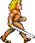

Paused
Hints Off
Hints On
Sound Off
Sound On
Thank you for playing this demo!
Press [spacebar] to play again
Game Over
Press [spacebar] to play again
Press C to see controls
Barbarian!
Created by Christopher Rhodes (chrisguyrhodes@gmail.com)
This is a twist on a game I played as a kid. I created sprites from YouTube videos,
animated them and created my own version of game. Enjoy!
Artwork and concept from Barbarian by Psygnosis
Theme Song: Death Of Rexor (Conan The Barbarian/Soundtrack Version)
Press [spacebar] to play
Press C to see controls
Control menu
<- Left
-> Right
A Attack
J Jump
R Run
P Pause
H Hints Toggle
X Sound Toggle
Press M for main menu